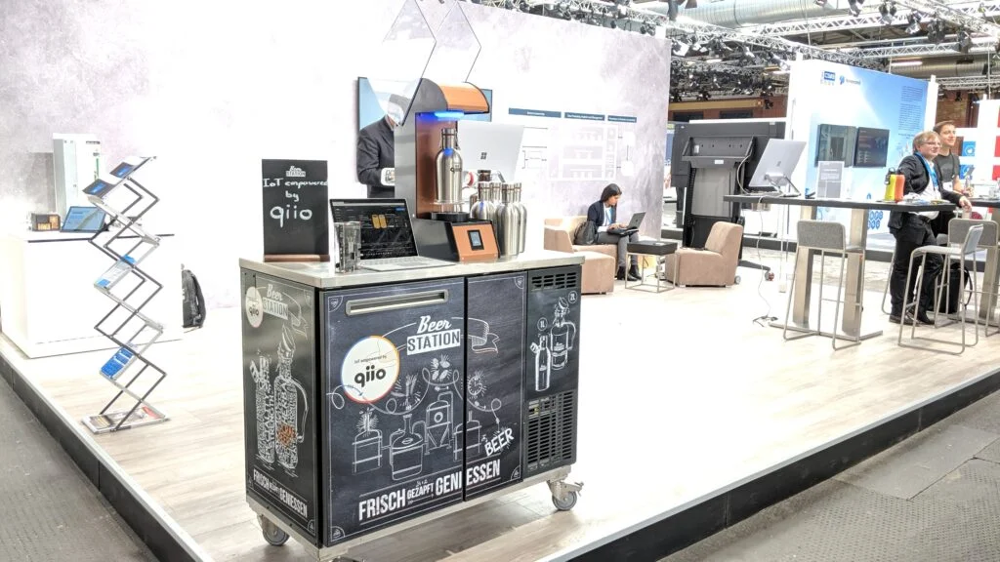

May 20, 2019
qiio highlights of Bosch ConnectedWorld 2019
5000+ visitors at Bosch ConnectedWorld
Bosch ConnectedWorld finished last week. qiio participated in the exhibition and showcased an IoT solution
for the beer industry.
More than 5’000 guests visited Bosch ConnectedWorld 2019, including executives, decision makers, digital
transformers, innovators, developers, entrepreneurs, and IoT enthusiasts. Visitors could experience IoT
implementations and discover unique use cases. The potential of IoT is high, like what Bosch CEO, Volkmar
Denner, said at the opening:
“Everything that can be connected will be connected!“
IoT-enabled Beer Station
qiio presented its solution for the beer industry. Beer Station, a draft system IoT-enabled by qiio, is an
autonomous beer draft system for end consumers. With the concept of zero waste, an end customer can fill up
beer with their refillable bottles. In addition, Beer Stations also allow the brewery to introduce a small
amount of new beer to their customers for market research.
The IoT version of the Beer Station designed by qiio monitors and analyzes beer consumption in real-time.
The cloud portal will show how much of which beer is being consumed, when it is being consumed and where.
When a beer tank is empty, the system will report automatically. As a result, a bar operator will have
non-stop beer supply. On the other hand, the brewery can cluster different customers to create a smart route
plan.
This solution is secure and end-to-end. Check this blog post to learn more about the value of end-to-end
solutions.

Next stop: automation&electronics 2019
From 5th to 6th June, we will participate in automation&electronics 2019 in Zurich Exhibition Hall. We look
forward to seeing you there at Booth C17!